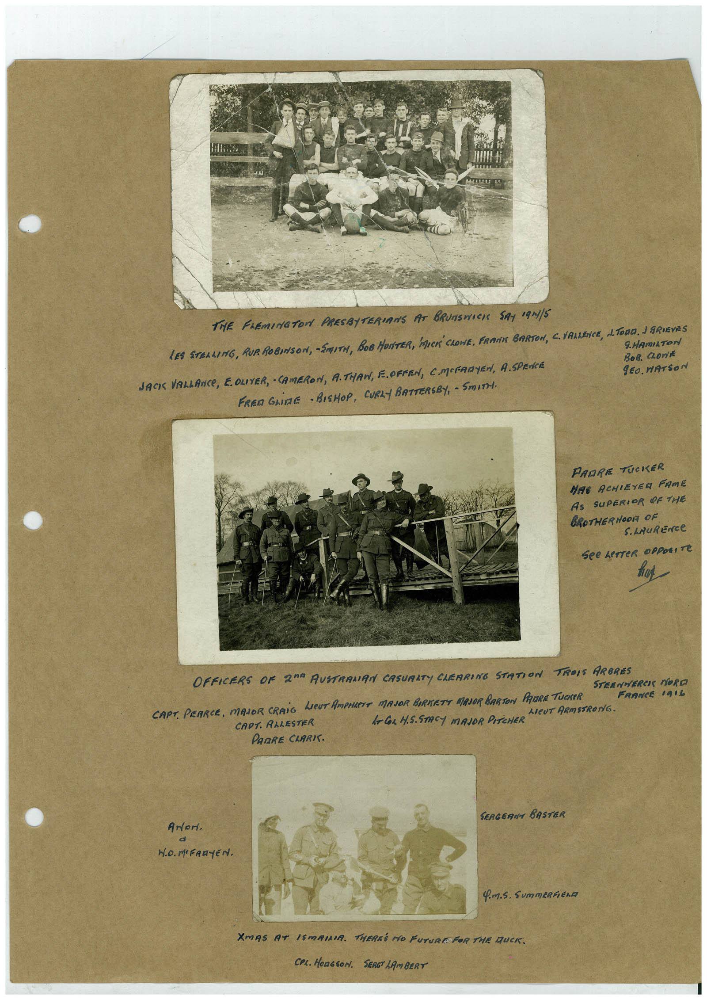

Book 1 · scan 087


Description
Transcription
Context
Review notes
Compare the machine draft with the scan. Handwriting and names need human review.
Artifacts
Edit the artifacts field in this note’s frontmatter to change these records. This summary is generated.
B01-S087-A01 — Photo & Handwritten note — Book 1, scan 087
Types: Photo, Handwritten note
Scope: Whole scanned page; individual items can be split out during review.
Caption: Not mapped yet.
Caption source: Not recorded yet.
Caption status: unmapped
Machine transcription
THE FAEMINGTON PRESBITERIANS AT BRUNSHICH SAY 19N1/5 LES STERLING, RUR ROBINSON, SMITH, BOB HUNTER, MUCK' CLONE, FRAMIE BARTON, C. VALENCE, L. TORO. I GRIEVES 9.HAmILTON JACIS VALLANCE, E. OLIVER, - CAMERON, A.THAN, E.OFPEN, CMORARYEN, A.SPENCE BoB. CLOn/t gEO. WATSON FREn GLINE - BISHOP, CURLY BATTERSBY, - SmITH. PARRE TUCKER HAE ACHIEYER FAME AS SUPERIOR OF THE BROTHERHOOR OF S. LAuRENCe See LeTTeR OPPOSITe OFFICERS OF 20° AUSTRAMAN CASURITY CHERRING STATION TROIS ARBRES STEENMERCI MORO CAPT. PEARCE, MAJOR CRAIG LIEUT AMPHLETE MAJOR BIRKETT MAJOR BARTON PAURE TUCKER FRANCE 101L AlEUT ARMSTRONG. CAPT. AALESTER l-Cor H.S.STACY MAJOR PITCHER PARRE CLARK. ANor. SERGERNT BASTER Q.M.S. SummERFEno XMAS AT ISMAILIA. THEREE NO FUTURE FOR THE DUCK. COL. HONGSON. SERG LAmBERT